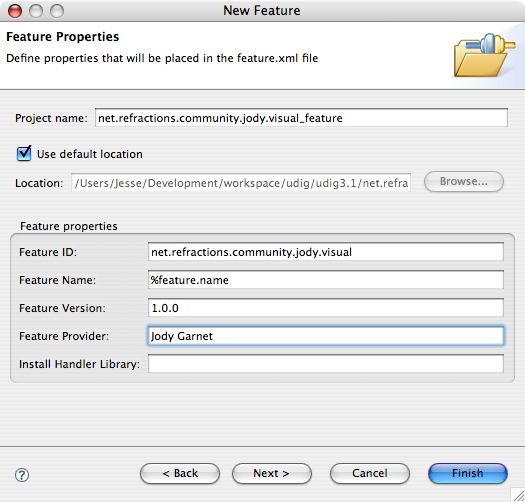
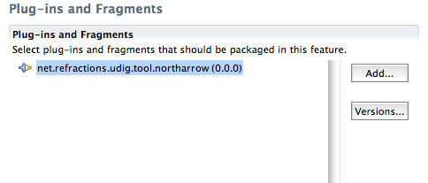

01 Working With Features
How to create a Feature
This page explains how to create a Feature for one or more of your Plug-ins. A Feature is a bundle of Plug-ins. The main reasons for creating a Feature are:
- Logically group together a number of plug-ins for distribution together
- Group Plug-ins together for use with an update site
- A Feature has (optional) Branding information associated with it, for example About information and Icons that appear in the Help>About ... Dialog
Products can be created from Plug-ins or Features, but if they are created from Features then an update site can be used to keep the product up-to-date. This cannot be done with out a Feature based product.
New Features can also be installed by the Eclipse update framework. If a Feature is added to an update site then any Eclipse based application can install the Feature using the Software Updater (usually under the Help menu).
Creating a Feature
- Create a Feature Project. New->Project.
- Select Feature Project in the Plug-in Development category
- The naming convention is:
- Feature ID - An ID usually URI.featureName for example net.refractions.community.jody.visual
- Feature Project - the Feature ID with _feature appended to the end.
- Feature Name - Unimportant but should usually be translatable (%feature.name in the feature.xml and the key/value pair in the plugin.properties)

- Press Finish
- A nice editor for the Feature.xml is opened. In the Branding Plug-in Field enter the Branding plug-in you created for this feature (or enter the name of the Branding plug-in you are going to create).
- Switch to the Plug-ins tab of the editor (tabs are across the bottom)
- Press Add ...
- Select the Plug-ins that will be part of the Feature

There is numerous other options for specifying what Features and Plug-ins the Feature depends on as well as what versions and how to install the Feature. This is all that is really required to make a Feature.
Exporting a Feature
- Open the feature.xml file
- Switch to the Overview tab
- Press Export Wizard
- Follow wizard's instructions
Here is a good link:
(c) Copyright (c) 2004-2008 Refractions Research Inc. and others.
[wiki]